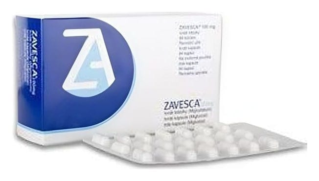

Zavesca 100 mg Kapsül, 84 Adet

Ne için kullanılır
KT · Bölüm 1ZAVESCA100 mg kapsül, 4 blisterşerit içerenbir kutuda her blisterşerit 21 kapsüliçerecek şekilde84 adet olaraksatılır.ZAVESCA100 mg kapsüller kapağındasiyah “OGT 918” ve gövdede siyah “100”yazılı beyaz kapsüllerdir. ZAVESCA,metabolizmayı etkileyen bir ilaç grubunadahildir. Aşağıdakiiki hastalığın tedavisindekullanılır: ZAVESCA,hafifve orta şiddettekitip 1 Gaucherhastalığınıntedavisinde kullanılır. Tip 1 Gaucherhastalığında,glikozilseramidadı verilenbir madde vücudunuzdan atılamaz. Vücudunbağışıklık sistemindeyer alan belli hücreleriniçinde birikmeye başlar.Bu durum karaciğerdeve dalaktabüyümeye,kanda değişikliklereve kemikhastalıklarınayol açabilir. BuilacıkullanmayabaşlamadanöncebuKULLANMATALİMATINI dikkatlice okuyunuz,çünküsizin için önemlibilgiler içermektedir. ·Bukullanmatalimatınısaklayınız.Dahasonratekrarokumayaihtiyaç duyabilirsiniz. · Eğerilave sorularınız olursa, lütfendoktorunuzaveyaeczacınızadanışınız. · Bu ilaç kişiselolaraksizin için reçete edilmiştir,başkalarınavermeyiniz. · Bu ilacınkullanımısırasında,doktoraveyahastaneyegittiğinizdedoktorunuzabu ilacıkullandığınızısöyleyiniz. · Bu talimattayazılanlaraaynenuyunuz.İlaçhakkındasizeönerilendozundışında yüksekveyadüşük doz kullanmayınız.
Tip 1 Gaucherhastalığındanormaldekullanılantedavi,enzim replasman(yerine koyma) tedavisidir.ZAVESCA,yalnızcahastanınenzim replasmantedavisiiçin uygun olmadığınındüşünüldüğüdurumlarda kullanılır. ZAVESCA
aynı zamandaNiemann-Picktip C hastalığınınilerleyen nörolojikbelirtilerinitedavietmekte kullanılır. Niemann-Pick tip C hastalığınasahipseniz,glikosfingolipidlergibi bazı yağlarbeyin hücrelerinizdebirikir.Bu durumyavaş göz hareketleri,denge,yutma ve hafızagibi nörolojikişlevlerde bozulmalara ve nöbetlere neden olabilir. ZAVESCA,‘glikozilseramid sentaz’ adı verilen ve çoğu glikosfingolipidin üretimininilk aşamasındansorumluolan enzimi engelleyerek etki gösterir.